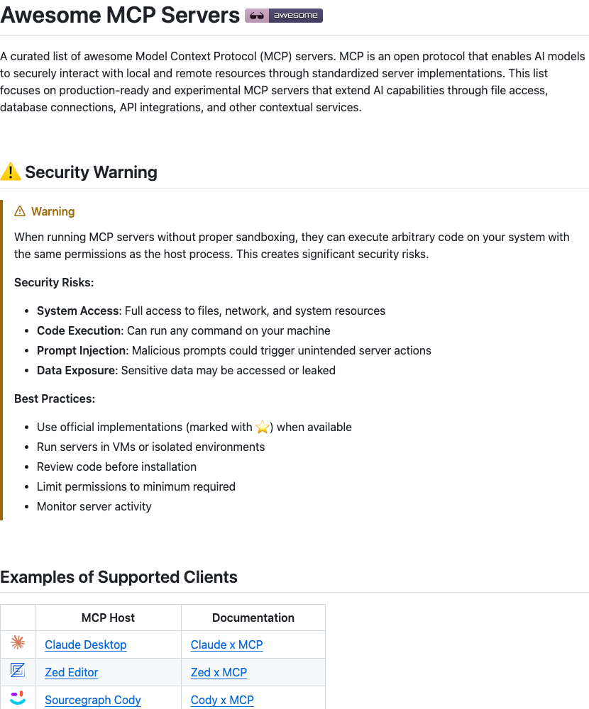

Twitter
sama_Sam Altman Notes Surge in LLM-Driven Twitter Accounts
Published: 2025-09-03T22:21:17.000Z

Sam Altman, CEO of OpenAI, tweeted that he previously didn't take the "dead internet theory" seriously, but now observes a significant surge in Twitter accounts operated by large language models (LLMs). This phenomenon prompts him to reconsider the theory, suggesting that AI-generated content might be altering the internet's ecosystem and raising new questions about information authenticity and platform content composition.
mathemagic1an_Agent/Client Protocol (ACP) Unveiled
Published: 2025-09-03T16:11:21.000Z

Jay Hack introduced the Agent/Client Protocol (ACP) from the zeddotdev team, designed to manage interactions between AI agents and Integrated Development Environments (IDEs), similar to an LSP. Supporting Claude Code and Gemini CLI, ACP signals a future trend where human UIs will be decoupled from CLI agent operations via open protocols, advancing AI development paradigms.
LangChainAI_LangChain 1.0 Alpha Release Unifies LLM Interfaces
Published: 2025-09-03T16:59:44.000Z

LangChain has officially released the alpha preview of its 1.0 version, introducing significant improvements in standardizing content across various Large Language Model (LLM) providers. This includes enhanced capabilities for reasoning, citations, tool calls, and handling multimodal data. The new release aims to provide a single, consistent interface, thereby eliminating the need for developers to juggle multiple APIs. This standardization greatly simplifies the development workflow and enhances efficiency for building applications powered by LLMs.
TransluceAI_AI Agents Successfully Jailbreak Frontier LLMs
Published: 2025-09-03T17:01:50.000Z

Transluce AI announced that its trained investigator agents can effectively identify and exploit specific behaviors in other models. Their research demonstrates that this approach scales to frontier large language models, with an 8B investigator model successfully jailbreaking advanced systems like GPT-5, Claude Opus 4.1, and Gemini 2.5 Pro. This finding underscores the significant potential of using smaller, specialized AI agents for automated red-teaming, offering a scalable method to evaluate and enhance the security and robustness of cutting-edge AI models.
shawnup_Acquires OpenPipe: Small Models Outperform Foundation Models via RL
Published: 2025-09-03T20:17:18.000Z

Shawn Lewis announced the successful acquisition of OpenPipe. OpenPipe's ART framework leverages reinforcement learning, enabling smaller open models to easily outperform large foundation models on real-world problems. This acquisition aims to enhance the performance of small models on specific tasks through the ART framework, providing more efficient and cost-effective AI solutions and promoting the democratization of AI technology.
techhalla_Creative Video Creation with Freepik Visual Prompting
Published: 2025-09-03T20:09:15.000Z

TechHalla shared their experience creating a creative video using Freepik's visual prompting feature, demonstrating an innovative approach to content generation. The tweet showcased a captivating video about "nano banana" entering their favorite arcade, with a promise to reveal the detailed production process. This highlights the growing potential of AI-assisted creative tools in streamlining video content generation, offering new possibilities for personalized narratives and complex scene construction within digital media.
wechat
Tencent Hunyuan's World Model Tops the WorldScore Rankings
Published: 2025-09-03T16:02:25.000Z

Tencent has officially released and open-sourced its advanced world model, HunyuanWorld-Voyager, marking a significant leap in generative AI. This innovative model is the industry's first to support native 3D reconstruction for ultra-long roaming scenes, capable of generating extensive, world-consistent environments and directly exporting videos into 3D formats. It offers an immersive interactive experience, allowing users to navigate generated scenes with mouse and keyboard, a significant improvement over traditional panoramas. HunyuanWorld-Voyager's core innovation lies in integrating scene depth prediction into the video generation process, enabling native 3D memory and scene reconstruction, which avoids the latency and precision loss of traditional post-processing. This framework ensures precise camera angles and generates 3D point clouds directly, supporting various applications like video scene reconstruction, 3D object texture generation, and style customization. The model has achieved remarkable success, topping the comprehensive capability rankings on Stanford University's WorldScore benchmark, outperforming all existing open-source methods. Its superior performance in camera motion control, spatial consistency, and video generation quality, including the ability to preserve intricate details and achieve high visual realism, has been rigorously validated. The open-sourcing of HunyuanWorld-Voyager, alongside other Tencent AI initiatives, underscores the company's commitment to advancing cutting-edge AI research and making powerful tools accessible to the global developer community.
Is Vector Retrieval More Expensive Than LLMs? Vector Databases Without S3 Support Will Be Eliminated Sooner or Later!
Published: 2025-09-03T10:00:41.000Z

AWS's introduction of S3Vector is disrupting the vector retrieval market with its extremely low storage costs, significantly undercutting traditional solutions. However, S3Vector comes with limitations, including slower query speeds, lower recall rates, and basic functionalities. The article highlights that as large language model (LLM) RAG applications drive an explosion in data volume, vector retrieval costs are soaring, making tiered storage—especially leveraging object storage like S3—an inevitable industry trend. Vector databases are evolving from memory- and disk-based eras towards a tiered storage paradigm. Consequently, vector databases that fail to support similar capabilities or deliver extreme cost-effectiveness will face obsolescence. S3Vector's emergence validates the strong demand for vector storage, educates the market, and fosters innovation, prompting professional vector databases like Milvus to accelerate their iterations. Milvus, for instance, is developing "vector data lake" solutions to address the dual challenges of cost and performance, aiming to provide efficient and economical data management for AI applications. This shift signifies a new era where cost-efficiency and scalability are paramount for vector database survival and growth.
Large Models Are Smarter with "Slightly Worse Memory"! Goldfish Loss Randomly Discards Tokens, Preventing AI from Rote Memorization
Published: 2025-09-03T05:17:03.000Z

Researchers from the University of Maryland and other institutions have introduced "Goldfish Loss," a novel method designed to address the issue of large language models over-memorizing training data. This approach involves randomly discarding a portion of tokens during loss calculation, compelling the model to learn linguistic patterns rather than verbatim replication of the training set. Unlike traditional regularization methods such as Dropout, Goldfish Loss employs a hashing-based masking strategy, ensuring consistent masked positions for identical passages, thereby fundamentally preventing rote memorization. Experiments demonstrate that Goldfish Loss significantly reduces model memorization while maintaining overall performance, enhancing AI's generalization capabilities rather than mere recall. Although it might necessitate more data for compensation, its core principle lies in making models smarter through "selective forgetting."
UCSD Unveils First AI Agent Browser: Multi-Page Design Revolutionizes Traditional Interaction
Published: 2025-09-03T04:46:37.000Z

The University of California San Diego (UCSD) has unveiled Orca, a groundbreaking AI agent browser that revolutionizes traditional linear tab-based interaction. Addressing the limitations of current AI browsers, which are confined to single pages and struggle with scalable automation workflows, Orca introduces an infinite canvas space. It redefines web pages as 'malleable materials' and the browser as a 'malleable space,' enabling users to simultaneously manage and compare multiple web pages while orchestrating numerous AI agents for information extraction and task execution. This design aims to liberate users from tedious tasks, elevating them to information 'conductors' capable of large-scale browsing. Preliminary studies indicate Orca significantly reduces multi-page management costs, stimulates user exploration, offers an intuitive spatial layout, and enhances user control and trust over AI-generated results. This innovation points towards a promising future for browser design, emphasizing user-driven engagement and empowerment through AI.
FantasyTalking2: Timestep-Layer Adaptive Preference Optimization for Audio-Driven Portrait Animation
Published: 2025-09-03T00:02:23.000Z

Alibaba introduces FantasyTalking2, marking a qualitative breakthrough in audio-driven portrait animation. This method addresses the complex challenge of balancing motion naturalness, visual fidelity, and lip synchronization through an innovative two-stage training strategy (TLPO). TLPO employs multi-expert decoupled preference alignment, assigning competing preferences to specialized modules, and utilizes a timestep-layer adaptive fusion mechanism to dynamically adjust knowledge injection. The research constructs a high-quality multi-dimensional preference dataset and trains a reward model based on Qwen2.5-Omni. Quantitative and qualitative evaluations, including user studies, consistently demonstrate that FantasyTalking2 significantly outperforms existing state-of-the-art methods in character motion, lip-sync accuracy, and visual quality. By achieving Pareto-optimal outputs, this work provides a robust solution for highly expressive and realistic human animation, highlighting the critical importance of fine-grained preference fusion in diffusion models.
One Word: Fast! Interpreting Meituan's LongCat-Flash Large Model Technical Report: Algorithm and Infrastructure Innovations
Published: 2025-09-03T00:02:23.000Z
Meituan has released the technical report for its LongCat-Flash large model, a 560B Mixture-of-Experts (MoE) architecture that stands out for its exceptional speed and efficiency, ranking among the fastest hundred-billion-parameter models. Key innovations include "Zero-computation Experts" for dynamic computational resource allocation and "Shortcut-connected MoE" to optimize communication efficiency. The model ensures large-scale training stability through strategies like hyperparameter transfer and model growth initialization, alongside a multi-stage training process designed to cultivate advanced agentic capabilities. LongCat-Flash demonstrates deep synergy between algorithmic and engineering advancements, achieving high-throughput, low-cost inference. It excels across four core capabilities: general knowledge, agentic tool use, programming, and instruction following, showcasing Meituan's robust technical prowess in the AI domain.
GitHub
Koog
Published: 2025-09-03T10:48:31Z

Koog, an incubator project by JetBrains, is a Kotlin-based framework designed for building and running AI agents entirely in idiomatic Kotlin. It supports multiplatform deployment across JVM, JS, WasmJS, and iOS, integrating core functionalities such as Model Context Protocol (MCP), embedding capabilities, and custom tool creation. The framework offers intelligent history compression, real-time streaming API, persistent agent memory, and comprehensive tracing. Compatible with major LLM providers like Google and OpenAI, Koog is suitable for developing a wide range of AI agent solutions, from simple chatbots to complex enterprise-level applications.
Awesome MCP Servers
Published: 2025-09-03T18:08:18Z

This GitHub repository curates a comprehensive list of excellent Model Context Protocol (MCP) servers. MCP is an open protocol enabling AI models to securely interact with local and remote resources. The list features production-ready and experimental MCP server implementations across various domains, including file systems, databases, API integrations, version control, cloud storage, communication, monitoring, search, and automation. It aims to extend AI capabilities and highlights crucial security best practices for running MCP servers.
üåü 500+ AI Agent Projects / UseCases
Published: 2025-08-01T11:52:42+00:00

This GitHub repository curates over 500 AI agent projects and use cases across various industries, showcasing the practical applications of AI agents in healthcare, finance, education, customer service, and more. It provides detailed use case descriptions and links to corresponding open-source projects, covering mainstream AI frameworks such as CrewAI, AutoGen, Agno, and Langgraph. This resource serves as a valuable hub for developers, researchers, and business enthusiasts seeking inspiration and knowledge in AI agent technology, fostering the widespread adoption and innovation of AI agent solutions.
eShop Reference Application - "AdventureWorks"
Published: 2025-09-03T00:16:26+00:00

eShop is a reference e-commerce application built on .NET Aspire, featuring a services-based architecture to demonstrate how to construct modern, distributed e-commerce solutions using .NET 9. The project integrates development tools like Docker, Visual Studio, and VS Code, and supports deployment to the Azure cloud platform via the Azure Developer CLI. It also offers optional integration with Azure OpenAI services and leverages GPT-35-Turbo and DALL·E 3 for sample data generation, providing developers with a comprehensive guide for building high-performance, scalable cloud-native applications.
AI Engineering book and other resources
Published: 2025-02-12T17:48:38Z

This GitHub repository serves as a comprehensive resource hub for the "AI Engineering" book, designed to equip professionals with the knowledge to effectively leverage foundation models for real-world problem-solving. The content delves into the entire lifecycle of AI application development, from adapting foundation models and evaluating their performance to advanced topics like prompt engineering, Retrieval-Augmented Generation (RAG), building and assessing AI agents, and strategic model finetuning. It also addresses critical aspects such as data quality, cost optimization, and security, providing a framework for navigating the complex AI landscape. Emphasizing foundational AI engineering principles rather than transient tools, this book is an invaluable guide for AI/ML engineers, data scientists, and technical managers, offering a systematic methodology to scale AI applications from experimental prototypes to robust production systems, bridging the gap between theoretical understanding and practical implementation.
Serena: A Powerful Coding Agent Toolkit
Published: 2025-09-03T19:05:43Z

Serena is a powerful AI coding agent toolkit designed to transform large language models (LLMs) into fully-featured agents that operate directly on codebases. Unlike many other tools, it is LLM-agnostic and framework-independent, offering flexible integration. Serena provides essential semantic code retrieval and editing tools, akin to an IDE's capabilities, by extracting code entities at the symbol level and exploiting relational structures. This approach greatly enhances token efficiency and precision for coding agents. Being free and open-source, Serena augments the capabilities of existing LLMs without additional cost. It supports a wide range of programming languages through Language Server Protocol (LSP) and seamlessly integrates with various clients like Claude Code, Claude Desktop, VSCode, and local GUIs via the Model Context Protocol (MCP), making it a game-changer for navigating and manipulating complex codebases.
huggingface
The Landscape of Agentic Reinforcement Learning for LLMs: A Survey
Published: 2025-09-02T17:46:26.000Z

The emergence of agentic reinforcement learning (Agentic RL) marks a paradigm
shift from conventional reinforcement learning applied to large language models
(LLM RL), reframing LLMs from passive sequence generators into autonomous,
decision-making agents embedded in complex, dynamic worlds. This survey
formalizes this conceptual shift by contrasting the degenerate single-step
Markov Decision Processes (MDPs) of LLM-RL with the temporally extended,
partially observable Markov decision processes (POMDPs) that define Agentic RL.
Building on this foundation, we propose a comprehensive twofold taxonomy: one
organized around core agentic capabilities, including planning, tool use,
memory, reasoning, self-improvement, and perception, and the other around their
applications across diverse task domains. Central to our thesis is that
reinforcement learning serves as the critical mechanism for transforming these
capabilities from static, heuristic modules into adaptive, robust agentic
behavior. To support and accelerate future research, we consolidate the
landscape of open-source environments, benchmarks, and frameworks into a
practical compendium. By synthesizing over five hundred recent works, this
survey charts the contours of this rapidly evolving field and highlights the
opportunities and challenges that will shape the development of scalable,
general-purpose AI agents.
VerlTool: Towards Holistic Agentic Reinforcement Learning with Tool Use
Published: 2025-09-01T01:45:18.000Z

Reinforcement Learning with Verifiable Rewards (RLVR) has demonstrated
success in enhancing LLM reasoning capabilities, but remains limited to
single-turn interactions without tool integration. While recent Agentic
Reinforcement Learning with Tool use (ARLT) approaches have emerged to address
multi-turn tool interactions, existing works develop task-specific codebases
that suffer from fragmentation, synchronous execution bottlenecks, and limited
extensibility across domains. These inefficiencies hinder broader community
adoption and algorithmic innovation. We introduce VerlTool, a unified and
modular framework that addresses these limitations through systematic design
principles. VerlTool provides four key contributions: (1) upstream alignment
with VeRL ensuring compatibility and simplified maintenance, (2) unified tool
management via standardized APIs supporting diverse modalities including code
execution, search, SQL databases, and vision processing, (3) asynchronous
rollout execution achieving near 2times speedup by eliminating
synchronization bottlenecks, and (4) comprehensive evaluation demonstrating
competitive performance across 6 ARLT domains. Our framework formalizes ARLT as
multi-turn trajectories with multi-modal observation tokens (text/image/video),
extending beyond single-turn RLVR paradigms. We train and evaluate models on
mathematical reasoning, knowledge QA, SQL generation, visual reasoning, web
search, and software engineering tasks, achieving results comparable to
specialized systems while providing unified training infrastructure. The
modular plugin architecture enables rapid tool integration requiring only
lightweight Python definitions, significantly reducing development overhead and
providing a scalable foundation for tool-augmented RL research. Our code is
open-sourced at https://github.com/TIGER-AI-Lab/verl-tool.
Implicit Actor Critic Coupling via a Supervised Learning Framework for
RLVR
Published: 2025-09-02T17:22:46.000Z

Recent advances in Reinforcement Learning with Verifiable Rewards (RLVR) have
empowered large language models (LLMs) to tackle challenging reasoning tasks
such as mathematics and programming. RLVR leverages verifiable outcome rewards
to guide policy optimization, enabling LLMs to progressively improve output
quality in a grounded and reliable manner. Despite its promise, the RLVR
paradigm poses significant challenges, as existing methods often suffer from
sparse reward signals and unstable policy gradient updates, particularly in
RL-based approaches. To address the challenges, we propose PACS, a
novel RLVR framework that achieves imPlicit Actor
Critic coupling via a Supervised learning framework. By
treating the outcome reward as a predictable label, we reformulate the RLVR
problem into a supervised learning task over a score function parameterized by
the policy model and optimized using cross-entropy loss. A detailed gradient
analysis shows that this supervised formulation inherently recovers the
classical policy gradient update while implicitly coupling actor and critic
roles, yielding more stable and efficient training. Benchmarking on challenging
mathematical reasoning tasks, PACS outperforms strong RLVR baselines, such as
PPO and GRPO, achieving superior reasoning performance. For instance, PACS
achieves 59.78\% at pass@256 on AIME 2025, representing improvements of 13.32
and 14.36 points over PPO and GRPO. This simple yet powerful framework offers a
promising avenue for LLMs post-training with verifiable rewards. Our code and
data are available as open source at https://github.com/ritzz-ai/PACS.
GenCompositor: Generative Video Compositing with Diffusion Transformer
Published: 2025-09-02T16:10:13.000Z

Video compositing combines live-action footage to create video production,
serving as a crucial technique in video creation and film production.
Traditional pipelines require intensive labor efforts and expert collaboration,
resulting in lengthy production cycles and high manpower costs. To address this
issue, we automate this process with generative models, called generative video
compositing. This new task strives to adaptively inject identity and motion
information of foreground video to the target video in an interactive manner,
allowing users to customize the size, motion trajectory, and other attributes
of the dynamic elements added in final video. Specifically, we designed a novel
Diffusion Transformer (DiT) pipeline based on its intrinsic properties. To
maintain consistency of the target video before and after editing, we revised a
light-weight DiT-based background preservation branch with masked token
injection. As to inherit dynamic elements from other sources, a DiT fusion
block is proposed using full self-attention, along with a simple yet effective
foreground augmentation for training. Besides, for fusing background and
foreground videos with different layouts based on user control, we developed a
novel position embedding, named Extended Rotary Position Embedding (ERoPE).
Finally, we curated a dataset comprising 61K sets of videos for our new task,
called VideoComp. This data includes complete dynamic elements and high-quality
target videos. Experiments demonstrate that our method effectively realizes
generative video compositing, outperforming existing possible solutions in
fidelity and consistency.
Benchmarking Optimizers for Large Language Model Pretraining
Published: 2025-09-01T12:50:30.000Z

The recent development of Large Language Models (LLMs) has been accompanied
by an effervescence of novel ideas and methods to better optimize the loss of
deep learning models. Claims from those methods are myriad: from faster
convergence to removing reliance on certain hyperparameters. However, the
diverse experimental protocols used to validate these claims make direct
comparisons between methods challenging. This study presents a comprehensive
evaluation of recent optimization techniques across standardized LLM
pretraining scenarios, systematically varying model size, batch size, and
training duration. Through careful tuning of each method, we provide guidance
to practitioners on which optimizer is best suited for each scenario. For
researchers, our work highlights promising directions for future optimization
research. Finally, by releasing our code and making all experiments fully
reproducible, we hope our efforts can help the development and rigorous
benchmarking of future methods.
Improving Large Vision and Language Models by Learning from a Panel of
Peers
Published: 2025-09-01T16:43:48.000Z

Traditional alignment methods for Large Vision and Language Models (LVLMs)
primarily rely on human-curated preference data. Human-generated preference
data is costly; machine-generated preference data is limited in quality; and
self-supervised preference data often introduces hallucinations. To overcome
these limitations, we propose a novel Panel-of-Peers learning framework
inspired by collaborative learning among humans. This approach leverages a
panel of LVLMs, each evaluating and learning from their collective outputs
through an iterative self-improvement process. By simulating a peer review
system, our models generate, assess, and refine outputs in response to a
curated set of prompts, mimicking a classroom learning environment. We
demonstrate that this methodology enhances model performance without requiring
extensive human-labeled datasets. Our experiments show significant improvement
across multiple benchmarks, demonstrating the potential of peer evaluations as
a scalable alternative to self-supervised alignment. Notably, we show that
Panel-of-Peers increases the average score on fifteen benchmarks from 48% to
57%